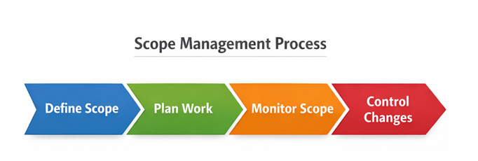
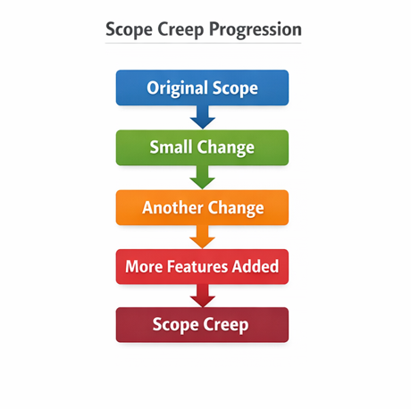

Define, control, and monitor project work to ensure successful delivery.
Even in Agile environments, understanding scope management helps you evaluate project boundaries, communicate with stakeholders, and prevent scope creep — ensuring your team delivers value without overcommitting.

Scope management refers to the process of defining, controlling, and monitoring the work that must be completed in a project. It ensures that the project includes all the necessary tasks required to achieve its objectives while preventing unnecessary work from being added.
Proper scope management helps project teams stay focused on the agreed project goals and deliver the expected outcomes within the planned time and resources.
Effective scope management is essential for successful project delivery. It helps teams clearly understand what is included in the project and what is not. This clarity reduces misunderstandings and ensures that the team works toward the same objectives.
Scope management also plays an important role in preventing scope creep, which occurs when additional requirements or changes are introduced without proper evaluation or approval.
Establishes what is included and excluded from the project
Enables accurate estimation of time, cost, and resources
Aligns stakeholders on project expectations
Protects against scope creep and unauthorized additions
Keeps the team focused on agreed objectives

Scope creep can occur when new requirements are added during the project without proper control. To prevent this, project managers and Scrum Masters should ensure that the project scope is clearly defined and documented.
Document all requirements before development begins
Keep all work items organized and prioritized
Evaluate impact of all change requests
Keep everyone informed about scope decisions